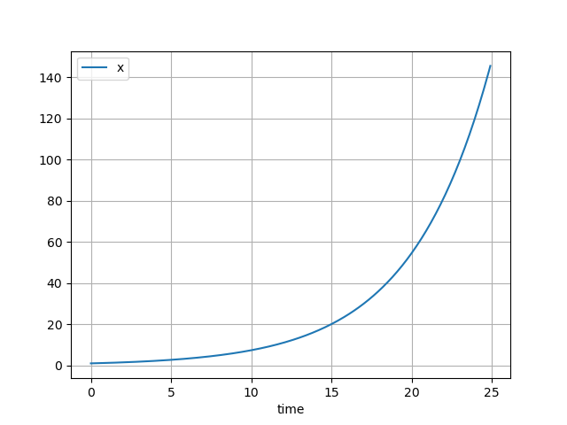

Malthusian growth
Raw code
The raw code for this example without explanations can be found here.
A fundamental equation in population dynamics describes a population which reproduces as a constant rate \(r\). Without any other influence, this population grows exponentially according to the differential equation \( \frac{dx}{dt} = rx \). This phenomenon is known as Malthusian growth.
This example covers:
- How to build a Malthusian growth model in
psymple, - How to adjust the model to have different inputs depending on the data available,
- How to build reusable model interfaces.
Implementation in psymple
Building a the differential equation
The differential equation \( \frac{dx}{dt} = rx \) is captured in a VariablePortedObject instance as follows.
from psymple.build import VariablePortedObject
pop = VariablePortedObject(
name="malthusian_pop",
assignments=[("x", "r*x")],
input_ports=[("r", 0.1)],
)
See defining ODEs for more information about this syntax. Specifying The value of parameter 'r' at an input port has two advantages:
- The variable ported object
popbecomes a general, reusable object, - The default value can be overwritten from elsewhere in a larger system.
Creating and running a simulation
The following commands create, run and plot a simulation of our equation with initial condition \( x = 1 \).
from psymple.build import System
system_1 = System(pop)
system_1.compile()
sim_1 = system_1.create_simulation(initial_values={"x": 1})
sim_1.simulate(t_end=25)
sim_1.plot_solution()

Changing parameters at simulation
The input parameter \( r \), which was given a default value of \( 0.1 \) can be overwritten at simulation. The following code creates a second simulation sim_2 with \( r = 0.2 \).
from psymple.build import System
system_1 = System(pop)
system_1.compile()
sim_2 = system_1.create_simulation(
initial_values={"x": 1},
input_parameters={"r": 0.2}
)
sim_2.simulate(t_end=25)
sim_2.plot_solution()

Overriding default behaviour with a function
Suppose that the birth rate \( b \) and death rate \( d \) of a population are known, with values \( 0.4 \) and \( 0.2 \), respectively. This is equivalent to a Malthusian population with rate \( r = b - d \). Instead of changing the model pop to accept inputs b and d, the calculation for \( r \) can be performed using a FunctionalPortedObject, and then pass this value to the input of pop.
Another benefit of this approach is to create a model which directly aligns with the data available, rather than requiring any pre-procession of birth and death rates into a single growth rate.
Defining the rate function
The following code captures the calculation of the rate function in the object rate.
from psymple.build import FunctionalPortedObject
rate = FunctionalPortedObject(
name="rate",
assignments=[("r", "b-d")],
)
See defining functions for more information about this syntax. As opposed to pop, the inputs b and d have not been given default values, but their ports have still been created automatically. Values will be provided to these ports later in the example.
Linking the rate function to the differential equation model
Next, the variable object 'pop' needs to read its value of 'r' from the value of 'r' produced by the function 'rate'. To do this, first import both pop and rate as children of a CompositePortedObject. Inside this object, defining a directed wire from 'rate.r' to 'malthusian_pop.r' tells psymple to identify these two values. See defining composite models for more information about adding children and wires to composite objects.
from psymple.build import CompositePortedObject
pop_system = CompositePortedObject(
name="malthusian_pop_system",
children=[pop, rate],
directed_wires=[("rate.r", "malthusian_pop.r")],
)
Notice that the variable object 'pop' never had to be redefined. Since it was defined generally, its mechanics can be reused over and over again. The following commands simulate and plot this new system.
Exposing inputs in a composite system
The object pop_system cannot be simulated until values for b and d are provided to rate. There are three ways this can be done:
- By updating the definition of
rateto include default values forbandd, - By giving default values to
banddat the objectpop_systemand tellingpsympleto pass these values torate, - By specifying values of
banddat simulation, and tellingpsympleto pass the values torate.
To accomplish either (2) or (3), input ports for b and d in the object pop_system need to be created, and directed wires defined from these to rate.b and rate.d, respectively. The difference between (2) and (3) is whether default values are specified for these new input ports. The following code updates the definition of pop_system to demonstrate method (2).
pop_system = CompositePortedObject(
name="malthusian_pop_system",
children=[pop, rate],
input_ports=[("b", 0.4), ("d", 0.2)],
directed_wires=[
("rate.r", "malthusian_pop.r"),
("b", "rate.b"),
("d", "rate.d")
],
)
Simulating the composite system
The following creates a new system system_2 for simulating pop_system. Notice that the initial value \( x = 1 \) must be specified by addressing malthusian_pop.x. The next section covers how to create an interface to address the initial value simply by x.
With default values \( b = 0.4 \) and \( d = 0.2 \), the simulation should produce Malthusian growth with rate \( r = 0.4 - 0.2 = 0.2 \). The plot confirms this by producing the same plot obtained in the section changing parameters at simulation.
system_2 = System(pop_system)
system_2.compile()
sim_3 = system_2.create_simulation(initial_values={"malthusian_pop.x": 1})
sim_3.simulate(t_end=25)
sim_3.plot_solution()

Creating an interface
An interface for a ported object simply refers to the ports which it defines. In a composite ported object, input, output and variable ports can all be defined to expose internal information.
When modelling in psymple, it is important to consider the interfaces of different components to maximise compatibility and reusability. For example, in population dynamics, it could make sense to decide that every model of a single population has a set of rates as inputs, and exposes a single variable.
The model pop for Malthusian growth does this, exposing an input rate r and a variable x. The composite model pop_system for birth-death dynamics, however, only exposes its input rates b and d, and not a variable. Adding a variable to the interface of pop_system standardises these two models and makes them function similarly, hiding the additional complexity inside pop_system. Another way to view this is by giving the composite ported object pop_system the same type of interface as a variable ported object.
The following code adjusts the composite object pop_system by giving it a variable port x, and telling psymple to aggregate the values of malthusian_pop.x and x by defining a variable wire.